Visão geral
O Roster Work é o sistema de escala de serviço da corporação. Esta visão geral mostra, de cima, como as peças se encaixam; o detalhe de cada uma fica na sua seção.
O que fica pronto antes
Depois de pronta, estas coisas mexem na escala
A escala (o coração)
Para cada dia, a escala responde a quatro coisas: quem trabalha, quando (o horário), onde (o posto) e em que função. O sistema separa isso em duas perguntas:
1) Quem está de serviço (o ciclo). Cada unidade tem um ritmo, por exemplo 24/48 (trabalha 24 horas e folga 48). Os militares rodam nesse ritmo, então a cada dia o sistema já sabe quem está de serviço. O ritmo é da unidade (fica em Ajustes), não é escolhido dia a dia.
2) Onde cada um fica (a distribuição). Sabendo quem está de serviço, o sistema coloca cada militar no seu lugar: em qual posto ou viatura e em qual função.
Primeiro o sistema sabe quem está de serviço, depois coloca cada um no seu lugar.
O que muda a escala
Depois da escala automática pronta, quatro coisas mexem nela por cima:
- Troca. Um militar passa o serviço (ou parte dele) para outro. Na escala, quem saiu fica riscado e quem entrou toma o lugar. Passa por aprovação.
- Folga. O militar tira um dia (ou um trecho) de serviço, então sai da escala naquele período. É um banco de horas: o saldo sobe quando trabalha a mais e desce quando folga. Passa por aprovação.
- Extrajornada. O estado paga o militar para trabalhar horas a mais; esse serviço entra na escala como extra. É um sistema separado da folga.
- Afastamento. Férias, licenças e dispensas tiram o militar da escala pelos dias do afastamento.
O que a escala precisa por baixo
Para o sistema montar a escala sozinho, três coisas precisam estar prontas antes:
- O efetivo (as pessoas). Os militares cadastrados, cada um com seus dados (grau, lotação, CNH, antiguidade). Sem efetivo, não há quem escalar. Fica em Usuários.
- Os postos e viaturas (onde servem). Os lugares de serviço: instalações (locais fixos, como a Central de Operações) e viaturas (que exigem CNH e podem entrar em manutenção). Cada posto tem uma guarnição (quantos militares). Fica em Postos.
- Os modelos e regras (o gabarito). O administrador monta, por unidade, um modelo que diz quais funções e vagas existem no dia; a distribuição segue esse gabarito. As regras ajustam quem pode ou não ir para certas funções. Fica em Distribuição.
Quem faz o quê
- O militar (usuário comum). Consulta a sua escala, pede trocas e folgas, declara disponibilidade de extrajornada e vê os seus avisos. Ele participa e solicita, não monta nem edita a escala.
- O administrador. Cadastra o efetivo e os postos, monta os modelos e a escala, aprova os pedidos (trocas, folgas, correções), lança extrajornada, registra afastamentos e atos de carreira. Ele monta e mantém o sistema.
O administrador também é um militar: faz as próprias solicitações como usuário e aprova como administrador, sem trocar de modo. Só não aprova o próprio pedido.
As telas do sistema
O menu à esquerda dá acesso a todas as áreas. Você abre e consulta todas elas; em algumas você também age (pede, aceita, declara). As telas de gestão você vê só para consultar: quem monta e edita é o administrador. Este é o mapa rápido; o passo a passo de cada uma vem nas próximas partes.
- Início. O resumo do seu dia: o próximo serviço, as horas da semana, o saldo de folgas, a próxima extra e as próximas férias. É por onde o sistema abre.
- Escala. A escala da unidade, em várias visões (Mês, Semana, Colunas, Dia e Militares). Aqui você consulta quando e onde trabalha; quem monta a escala é o administrador.
- Trocas. As trocas de serviço. Você age: solicita uma troca, aceita ou recusa as que chegam, acompanha as dívidas de horas e cobra quem lhe deve.
- Folgas. O seu banco de horas de descanso. Você age: pede folga e acompanha o seu saldo e o seu histórico.
- Extrajornada. As horas pagas pelo estado. Se você é voluntário, age declarando os dias em que quer ou não trabalhar; e consulta a escala de extra.
- Afastamentos. As férias, licenças e dispensas da unidade. Você consulta; quem registra um afastamento é o administrador.
- Postos. Os lugares de serviço: as instalações e as viaturas. Você consulta o quadro físico da unidade.
- Distribuição. O gabarito da escala: os modelos (as funções e vagas de cada dia) e as regras. Você consulta como a escala é montada por baixo.
- Usuários. O efetivo da unidade, com a ficha de cada militar. Você consulta; cadastrar e editar é do administrador.
- Ajustes. As configurações da unidade, como o ritmo do ciclo. Você consulta; alterar é do administrador.
No canto do cabeçalho ainda ficam o sino de avisos (as suas notificações) e o Meu perfil (os seus dados e a sua senha), que não estão no menu. Os avisos têm a sua seção mais adiante.
Primeiros passos
Entrar no sistema
Para usar o Roster Work, cada militar entra com o seu documento e a sua senha.

- CPF ou RG. Digite o seu documento. Pode ser o CPF (11 números) ou o RG (8 ou 9 números). O campo coloca os pontos e o traço sozinho.
- Senha. Digite a sua senha.
- Entrar. Clique no botão Entrar, ou aperte a tecla Enter.
- Atalhos. "Criar conta" abre o cadastro para quem ainda não tem acesso. "Esqueci minha senha" ajuda a definir uma senha nova.
O que as mensagens indicam. "Usuário não encontrado" aparece quando o documento ainda não tem cadastro no sistema; para se cadastrar, use "Criar conta". "Senha incorreta" aparece quando a senha não confere.
Já entrou antes? Enquanto a sua sessão estiver ativa, o sistema abre direto na tela inicial, sem pedir o login de novo.
Criar conta
Quem ainda não tem acesso usa "Criar conta", na tela de entrada. A tela começa pedindo só o seu CPF e, a partir dele, segue por um de três caminhos.
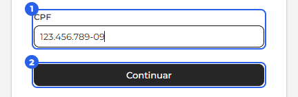
Se o seu CPF já tem acesso, a tela avisa e leva você para "Esqueci minha senha". Se o seu CPF ainda não está no sistema, ela abre o formulário em branco para um cadastro novo, explicado mais abaixo. E se um administrador já cadastrou você (por exemplo, para a escala funcionar enquanto você estava afastado), a tela pede um token de acesso.
Assumir a sua ficha com o token. O token é um código curto que você pede ao seu administrador. Ele o entrega em mãos ou por mensagem, vale por tempo limitado e serve uma vez. Digite o seu CPF e o token para continuar.
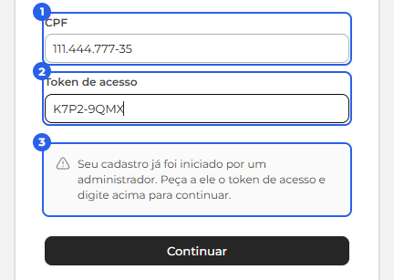
Com o token certo, os seus dados aparecem preenchidos para você conferir e criar a senha. Confira tudo e, no fim, defina a senha que passará a usar. A senha é sempre escolhida por você; o administrador nunca a define.
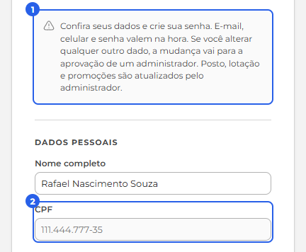
Ao confirmar, a sua conta é criada e você já entra com o seu CPF e a senha. E-mail, celular e senha valem na hora. Se você corrigir qualquer outro dado (nome, RG, nascimento e afins), a mudança passa pela aprovação de um administrador antes de valer, como uma correção comum. Posto, lotação e promoções aparecem só para conferência: eles mudam por promoção e transferência, feitas pelo administrador.
Cadastro novo (CPF fora do sistema). Quando o seu CPF ainda não existe no sistema, você preenche a ficha inteira: os dados pessoais (nome, CPF, RG, nascimento, CNH, celular e email), os dados institucionais (tipo, posto ou graduação, nome de guerra, data de inclusão, colocação por antiguidade, setor e a lotação, na mesma árvore usada no resto do sistema) e a senha. Ao enviar, o sistema confirma com "Cadastro enviado. Um administrador vai analisar." e volta para a tela de entrada. Esse cadastro vira um pedido, e o acesso só é liberado quando um administrador aprova.
Até a aprovação, ao tentar entrar você vê "Seu cadastro está aguardando a aprovação de um administrador.", o sinal de que o pedido chegou e está na fila. Assim que for aprovado, você entra com o seu documento e a senha que escolheu.
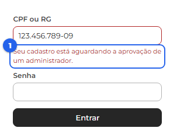
A tela responde sempre da mesma forma para qualquer CPF e não revela quem já está cadastrado. Por isso, quem foi cadastrado por um administrador só assume a própria ficha com o token, que chega pelas mãos dele.
A moldura: menu, unidades, tema e avisos
Depois de entrar, o sistema mostra sempre a mesma moldura em volta: o menu à esquerda, o cabeçalho no topo e a área de conteúdo no meio, que muda conforme a tela que você abre.
Menu (à esquerda). Lista as áreas do sistema. Clique numa para abri-la, e a área aberta fica destacada.


No pé do menu, o botão "Recolher menu" encolhe a barra para sobrar espaço. Recolhida, aparece só o ícone, e o nome surge ao passar o mouse. Essa escolha fica salva para os próximos logins.

Além das áreas comuns, o administrador tem o Histórico (auditoria). As áreas de gestão (Postos, Distribuição, Usuários e Ajustes) o usuário comum também abre, mas só para consulta; as ações de administrador ficam escondidas para ele. O item Programador aparece só para a equipe de programação.
Seletor de unidades (ao lado do logo). É ele que decide quais unidades aparecem nas telas (Escala, Usuários e outras). Clique para abrir a árvore, marque as unidades que quer ver (1) e clique em Aplicar (2).

Começa na sua lotação. Quem é do comando vê a companhia e os pelotões; quem é de um pelotão vê a companhia e o próprio pelotão. A escolha vale só naquela sessão: no próximo login, volta ao padrão.
O canto direito do cabeçalho. Reúne três atalhos:

- Tema. O botão de sol e lua alterna entre o tema claro e o escuro. A sua escolha fica salva.
- Sino de avisos. Mostra as suas notificações (o que aconteceu com você: uma troca para confirmar, uma folga decidida, uma correção aprovada). As não lidas ficam em negrito, e o número conta só as não lidas. Dá para "Marcar todas como lidas" ou abrir "Ver todos". Clicar numa notificação leva direto à tela do assunto.
- Menu do canto (seu nome). Abre Meu perfil, Fale conosco, Manual e Sair.
Meu perfil
É a sua página pessoal. Abre pelo menu do canto (seu nome) em "Meu perfil", e tem três abas: Perfil, Meus dados e Segurança.

Perfil (1). Mostra o seu cartão de identificação (grau, nome de guerra, lotação e o papel, Usuário ou Administrador) e os seus dados em leitura, separados em Identificação e Carreira. No fim, em Preferências, você troca o Tema, claro ou escuro, que muda na hora.
Meus dados (2). É onde você pede uma correção nos seus dados. Um aviso no topo lembra a regra: toda alteração passa pela aprovação do administrador.

Altere os campos que precisar. O campo mexido fica destacado e aparece um contador ("1 alteração a enviar"). Depois, clique em Solicitar correção para enviar tudo num pedido só, ou em Desfazer para voltar ao que estava.

Como funciona a aprovação: você só solicita; o pedido fica pendente até um administrador aprovar. Vale para todos os dados, inclusive celular, email e CNH. Abaixo do formulário, em "Minhas solicitações", você acompanha cada pedido pelo status: Pendente, Aprovada ou Recusada. O CPF não entra (é o seu login), e grau e lotação também não (mudam só por promoção ou transferência).
Segurança (3). Aqui você troca a sua senha: digite a senha atual, a nova (ao menos 6 caracteres e diferente da atual) e confirme. A senha muda na hora, sem precisar de aprovação.

A árvore de unidades
Algumas telas organizam a informação numa árvore de unidades: a sua corporação em hierarquia (companhia, pelotão, e assim por diante). Você a encontra, por exemplo, em Trocas (aba Todas), Usuários e Postos.
Como ela se monta. A árvore mostra só as unidades que você marcou no seletor de unidades (no topo da tela). As unidades acima delas aparecem como títulos, que situam a lista, e o conteúdo daquela tela (os militares, as trocas, as instalações…) aparece dentro da unidade marcada, com uma contagem ao lado. Os títulos grudam no topo enquanto você rola, então você sempre sabe em qual unidade está.
Mostrar mais ou menos níveis. No canto superior direito da lista há dois botões, Mais títulos e Menos títulos (o nome aparece ao passar o mouse). Eles mostram mais ou menos níveis do topo da hierarquia: Menos títulos encolhe (esconde os níveis mais altos e deixa a lista mais curta e direta) e Mais títulos os traz de volta. Há um limite: a árvore nunca esconde a unidade que você marcou nem o nível logo acima dela, e ao chegar nesse limite o botão fica desativado.

A Escala
Ver a minha escala e o meu serviço
Você tem duas telas para ver quando e onde trabalha: o Início (um resumo rápido) e a Escala (a visão completa).
O Início (resumo rápido). Assim que você entra, o Início mostra o seu Próximo serviço (quando, horário, função e posto), além das horas da semana, do saldo de folgas, da próxima extra e das próximas férias.

A Escala (visão completa). A página Escala mostra a escala da unidade, dia a dia. Para achar alguém rápido, use a busca "Pesquisar militar" e digite um nome (também vale CPF ou RG). A busca tem dois modos, no botão ao lado do campo: Marcar (o padrão), que realça o militar na grade mantendo os demais visíveis, e Filtrar, que mostra só quem você procurou.

Os dias de serviço do militar ficam destacados na grade, com o horário e o posto. O espaçamento entre eles segue o ritmo configurado para a unidade, como o 24/48, e pode variar de uma unidade para outra.

A Escala tem outros modos de ver além do Mês (Semana, Colunas, Dia e Militares). Todos mostram a mesma escala, de jeitos diferentes; use o que for melhor para você.
Contínuos, pontuais e a distribuição do dia
A escala nasce de um ciclo, com alguns reforços pontuais, e a cada dia as pessoas de serviço são distribuídas nos postos. Entender essas ideias ajuda a ler a escala e os ícones dela.
Contínuos. A maior parte do efetivo entra na escala por um ciclo: a unidade tem um ritmo, por exemplo 24/48 (24 horas de serviço e 48 de folga), e cada militar roda nesse ritmo. Definido o dia em que começa, o sistema projeta sozinho os próximos serviços dele, por meses à frente. Os contínuos são os militares que estão na escala de forma regular, por esse ciclo.
Pontuais. Às vezes um militar entra só num dia, fora do ciclo, como um reforço para aquela data. Ele trabalha naquele dia e segue fora do ciclo nos demais.
A distribuição do dia. Ao clicar num dia na grade, abre um painel à direita com aquele dia montado. O painel tem três abas: Distribuição (os postos, as funções e quem está em cada uma), Contínuos (quem o ciclo escala naquele dia) e Pontuais (quem foi inserido só naquele dia). No alto ficam os avisos do dia, em vermelho o que trava e em amarelo as ressalvas, e quem está de serviço sem função aparece numa caixa vermelha. Qualquer pessoa abre o painel para ver; o administrador também edita.
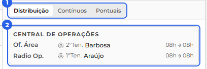
Os ícones da escala
Na Escala, à esquerda de cada nome, um ícone mostra de onde o militar veio naquele dia:
- Escala base. Marca onde o militar entrou no ciclo: o ponto em que um administrador o inseriu para começar na escala base.
- Gerado pelo sistema. Os dias que o sistema projetou sozinho a partir daquela entrada, seguindo o ciclo da unidade.
- Inserção pontual. O militar foi colocado só naquele dia, fora do ciclo normal.
- Troca. O militar está ali por uma troca, cobrindo um colega.
- Folga. O militar está de folga naquele dia.
- Extrajornada. O militar está numa hora extra paga.
- Cadeado. O único que não fala do dia: indica que a função daquele militar foi definida à mão pelo administrador e, por isso, não muda quando o sistema recalcula. Aparece junto de outro ícone de origem.
Nome riscado. Quando o nome aparece riscado, como em 3ºSgt. Meireles, é porque o militar saiu daquele serviço, por folga ou por troca. Nesse caso aparecem dois ícones: o da origem dele no dia e o marcador de folga ou de troca.
Militar afastado não vai assumir. Pode acontecer de um militar assumir um serviço por troca e, mais tarde, entrar de férias, licença ou dispensa naquele mesmo dia. Nesse caso ele continua na lista do serviço, mas com um aviso amarelo: na prática ele não vai assumir, porque está afastado. Ao lançar o afastamento, o administrador é avisado de que aquele militar cobre um serviço por troca e decide se segue; seguindo, o serviço fica marcado em amarelo, na linha do militar e na lista de avisos do dia, para a cobertura ser resolvida.
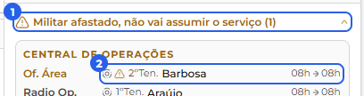
Montar o ciclo: Contínuos e Pontuais Apenas administradores
No painel do dia, o administrador monta quem está de serviço nas abas Contínuos e Pontuais. Nas duas, o botão Editar abre a edição, cada mudança fica marcada na tela e o Salvar aplica todas de uma vez.
Contínuos (o ciclo). A aba mostra, em "Contínuos do dia", quem o ciclo escala naquele dia (quem está de folga aparece riscado) e, em "Fora da escala", quem não está no ciclo. No Editar, em "Fora da escala" o Adicionar marca um militar para entrar no ciclo a partir daquele dia; é assim que se coloca alguém na escala, inclusive o retorno de quem saiu por atestado longo ou baixa. Em "Contínuos do dia", o Tirar marca a saída daquele dia em diante, e, quando já há saída marcada, aparecem "Sai em DD/MM" e Cancelar saída. Cada mudança recebe um selo (Vai entrar ou Vai sair) e o Salvar aplica todas de uma vez, recalculando a escala uma única vez.
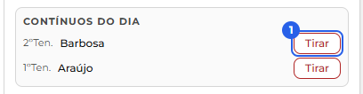
Tirar do ciclo mexe no que dependia dele. Ao clicar em Tirar, e também ao dar baixa ou transferir, o sistema mostra quanto vai cancelar antes de você confirmar, por exemplo "isto também vai cancelar 2 trocas e 1 folga". Tirar um militar do ciclo cancela as trocas e as folgas futuras dele, devolve o saldo das folgas e avisa os envolvidos.
Pontuais (reforço de um dia). No Editar da aba Pontuais, você insere um militar avulso naquele dia, ajusta o horário e pode remover. Ao Salvar, o dia é redistribuído com os pontuais.
A distribuição do dia Apenas administradores
Na aba Distribuição do painel do dia, o administrador ajusta as funções daquele dia. O botão Editar, no alto do painel, abre a edição (o Ver é a leitura que todos têm).
No Editar, você mexe só naquele dia:
- Trocar o militar de uma função, escolhendo outro na lista.
- Remover um militar de uma função, deixando a vaga vazia.
- Adicionar função num posto, para incluir uma vaga e preenchê-la.
- Mudar o horário de uma função, dentro da disponibilidade do militar.
- Restaurar, para voltar uma função ao que o sistema tinha montado.
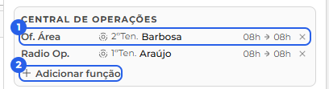
O que você mexeu à mão aparece riscado logo abaixo (o valor automático), uma barra cinza marca o que ainda falta salvar, e o Salvar grava. Esses ajustes manuais ficam por cima do automático e continuam valendo mesmo quando o sistema recalcula a escala.
Trocas
Solicitar e acompanhar uma troca
Uma troca é quando você pede que outro militar cubra um serviço seu. Pode ser o turno inteiro ou apenas um período de horas dele, e você pode marcar uma devolução (um dia do colega que você cobre em retorno) ou deixar essa devolução para depois.
Como pedir. Na página Trocas, clique em "Solicitar troca". Abre um painel com dois blocos:
- Solicitante (você): escolha o dia do serviço que quer passar e, no período, mantenha o turno inteiro ou marque só as horas que quer trocar.
- Solicitado: escolha a unidade e o militar que vai cobrir. A lista traz apenas quem está livre naquele dia. Em Devolução, deixe em Pendência (você fica devendo o serviço, para acertar mais tarde) ou escolha Marcar dia (aponte um dia do colega e o período que você cobre em troca).

Ao confirmar, a troca nasce como "Aguardando confirmação" e segue para o militar que você escolheu.
Quando pedem uma troca a você. O pedido aparece na aba Minhas e nos seus avisos. Ao abrir a troca, um painel mostra quem troca, o dia, o horário e a devolução, junto de uma análise do impacto na escala. No rodapé, você Aceita ou Recusa: aceitando, a troca segue para a aprovação de um administrador; recusando, ela se encerra.

Acompanhar as suas trocas. A página Trocas tem três abas: Todas (as trocas da sua unidade), Minhas (as que você participa, como solicitante ou solicitado) e Pendentes (as devoluções em aberto). Cada troca traz um selo com a situação: Aguardando confirmação, Aguardando aprovação, Aprovada, Recusada, Rejeitada ou Cancelada.

Cancelar a sua solicitação. Enquanto a troca está aguardando (confirmação ou aprovação), você pode abri-la e usar Cancelar troca. Depois de aprovada, apenas um administrador pode desfazê-la.

A troca aprovada na escala. Depois da aprovação do administrador, a troca passa a valer na escala. No dia trocado, o militar que passou o serviço aparece riscado e quem assumiu entra no lugar, os dois com o ícone de troca. Havendo devolução, o mesmo acontece no dia dela, com os papéis invertidos.

Devolução e pendências. Quando você marca a devolução, com o dia e o período do colega, as duas datas ficam casadas e ninguém fica devendo. Se a devolução tiver duração diferente do serviço, ou se você a deixar em Pendência, a diferença vira uma dívida de horas: quem passou o serviço fica devendo a quem cobriu. A aba Pendentes reúne essas dívidas, você vê as que envolvem você e o administrador vê todas.

Ver o histórico e cobrar. Clique num card para abrir, à direita, o histórico entre vocês dois: cada troca vira uma linha com a data, quem folgou e quem trabalhou e as horas, para você ver de onde o saldo veio. Um Ver mais traz as trocas mais antigas. Nesse painel, quem tem horas a receber usa o botão Cobrar: ele abre o Solicitar troca já apontado para quem deve, com as horas da dívida prontas na barra do serviço. Você só escolhe qual dia seu o colega vai cobrir e confirma, e quando a troca é aprovada, a dívida é acertada.

Aprovar trocas Apenas administradores
Depois que o colega aceita, a troca fica "Aguardando aprovação" e espera um administrador. Na aba Todas, o administrador abre a troca que quer decidir.
A análise de impacto. Ao abrir a troca, o painel mostra um veredito em cores sobre o efeito dela na escala, com a lista do que foi encontrado:
- Verde: sem impacto, pode aprovar tranquilo.
- Amarelo: uma ressalva, como acúmulo de funções no dia ou saldo de horas (quando a devolução tem duração diferente do serviço).
- Vermelho: um problema, como quem vai assumir estar inativo, de férias, licença ou dispensa, já ter uma hora extra naquele dia ou sobrepor outro serviço.
O botão Aprovar fica disponível assim que a análise termina.
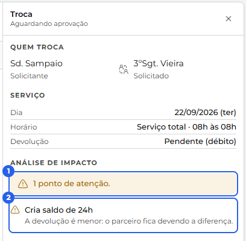
As ações. No rodapé do painel, o que aparece depende do momento da troca:
- Enquanto ela ainda espera o colega aceitar, o administrador pode Aprovar sem confirmação, que aprova sem aguardar o outro militar (útil quando ele demora a responder).
- Depois de aceita pelo colega, ficam Aprovar e Rejeitar.
- Já aprovada, o administrador ainda pode Cancelar troca, que desfaz a troca e volta a escala ao que era.
Cada ação pede uma confirmação antes de aplicar. Quando a análise apontou um problema, o aviso é mais firme ("podem quebrar a escala. Aprovar mesmo assim?"): o sistema sinaliza, não trava, e a decisão é do administrador. Logo depois de aprovar aparece um resumo, com um Desfazer à mão. Aprovada, a troca passa a valer na escala (o riscado da seção anterior) e a dívida de horas entre os dois é acertada.
Afastamento depois da troca. Se, mais tarde, o militar que assumiu o serviço entrar de férias, licença ou dispensa naquele dia, quem lança o afastamento é avisado de que ele cobre um serviço por troca e decide se segue. Seguindo, a troca não é desfeita, mas a escala marca aquele serviço em amarelo, porque na prática ele não vai assumir.
Folgas
Solicitar uma folga
Tirar uma folga é deixar de fazer um serviço que já está escalado para você, descontando as horas desse serviço do seu banco de horas de folga. É um sistema separado da Extrajornada (que é hora paga pelo estado); as horas daqui não são hora extra.
O seu saldo. O saldo é o seu banco de horas: ele sobe quando você trabalha a mais (um serviço além do seu ciclo, ou um ajuste do gestor) e desce quando você tira folga. Pode ficar negativo (você fica devendo horas), e o sistema avisa na hora de pedir. Um pedido em aberto não mexe no saldo até ser aprovado.
Como pedir. Na página Folgas, aba Minhas folgas, o botão "Solicitar folga" abre um painel. Escolha um dia em que você está de serviço e o período (o turno inteiro ou um trecho), e pode escrever um motivo. As horas do serviço saem do seu saldo, e o pedido nasce como "Solicitada".

Aprovação e escala. Um administrador Aprova ou Recusa. Aprovada, a folga passa a valer: na escala, no dia da folga, você aparece riscado e as horas são descontadas do saldo. Recusada, encerra.
Acompanhar e cancelar. A aba Minhas folgas reúne o seu saldo em destaque, os pedidos em aberto e o seu extrato (os lançamentos que sobem e descem o saldo), cada um com a sua situação. Enquanto o pedido está Solicitada, você pode cancelá-lo no botão ✕ ao lado dele; depois de aprovado, o cancelamento fica com o administrador.

Aprovar e conceder folgas Apenas administradores
Na página Folgas, o administrador tem duas abas a mais: Aprovações, com os pedidos à espera, e Equipe, com o efetivo.
Decidir um pedido. A aba Aprovações reúne as folgas "Solicitada". Ao abrir uma, o painel mostra o militar, o dia, o trecho e o motivo, e uma análise de impacto com um veredito em cores. Como a folga tira o militar do serviço daquele dia, o veredito olha a cobertura: o que acontece com a escala quando ele sai.
- Verde: a saída dele não deixa buraco, pode aprovar tranquilo.
- Amarelo: uma ressalva na cobertura daquele dia.
- Vermelho: um problema, o dia fica sem gente ou a distribuição não fecha sem ele.
No rodapé ficam Aprovar e Recusar. O Aprovar libera assim que a análise termina, e cada ação pede uma confirmação. Quando a análise apontou um problema, o aviso é mais firme ("podem quebrar a escala. Aprovar mesmo assim?"): o sistema sinaliza, não trava, e a decisão é do administrador. Aprovada, a folga passa a valer (na escala o militar fica riscado e as horas saem do saldo dele) e aparece um resumo com um Desfazer à mão. Recusada, encerra.
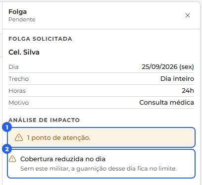
A aba Equipe. Ela mostra o efetivo em dois modos: Saldos, o saldo de cada militar, e Histórico, os lançamentos de folga do efetivo. Ao clicar num militar em Saldos, abre o painel dele com o extrato (saldo e lançamentos) e, para o administrador, uma aba Ações com duas ferramentas.
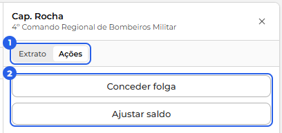
Conceder folga. Dá uma folga a um militar direto, sem depender de pedido. O calendário só oferece os dias em que ele está de serviço; você escolhe o dia e o período, e a folga já vale (situação "Concedida"): as horas saem do saldo e ele aparece riscado na escala.
Ajustar saldo. Acerta o banco de horas na mão: Adicionar ou Descontar uma quantidade de horas, sempre com um motivo. Serve para corrigir o saldo quando algo não passou pelo fluxo normal. Muda só o número, não mexe na escala.
Extrajornada
Declarar disponibilidade
A extrajornada é a hora extra paga: o estado paga em dinheiro para o militar trabalhar horas a mais. Ela é organizada em cotas (cada cota vale 6 horas) e é um sistema separado das Folgas. Na página Extrajornada, aba Disponibilidade, você preenche a sua declaração, mês a mês: se quer participar, quantas cotas quer e em quais dias.
Sou voluntário. Só o voluntário recebe extrajornada, então o primeiro passo é responder "Sou voluntário". Em Não, a declaração termina aí. Em Sim, aparecem as cotas e as datas para você preencher.
Quantas cotas você quer. Escolha quantas cotas deseja no mês, de 1 a 8 (de 6 a 48 horas). O botão "Fechar blocos de 24 h" é para quem só aceita turnos inteiros: ligando ele, as cotas ficam em 4 (um turno de 24 horas) ou 8 (dois turnos).
Marcar os dias. No calendário, cada clique num dia alterna entre Quero (verde), Não quero (vermelho) e neutro (branco). Eles se organizam em duas listas, Datas que quero e Datas que não quero, e você marca de 5 a 10 datas em cada uma (o mínimo de 5 diminui se você tiver poucos dias livres no mês). Cada lista mostra um contador, e um aviso indica quantas datas ainda faltam.

Dias em que você já está ocupado. Um dia em que você já tem serviço, troca, folga, férias, licença ou atestado fica apagado e não pode ser marcado, com o motivo escrito na própria data.
Quantos querem cada dia. No canto de cada dia aparece quantos voluntários querem aquele dia, para você enxergar os mais e os menos procurados. No alto da tela, um seletor escolhe de qual grupo é essa contagem: a sua unidade, a companhia inteira ou outro pelotão.

O prazo. Você declara sempre a disponibilidade do mês seguinte, e só até o dia 25 do mês atual. Um aviso no topo da declaração mostra o estado: as datas em que as alterações são permitidas, ou, quando o prazo fecha, quando a próxima declaração abre. Fora do prazo, você ainda vê a sua declaração, mas não pode mudá-la.
Meses anteriores. Você pode voltar aos meses passados, só para ver. Num mês em que foi voluntário, aparece um resumo do que você recebeu: o total de cotas e cada data com quatro bolinhas, uma para cada bloco de 6 horas. Num mês em que não foi voluntário, o sistema apenas informa isso.
Cotas e montar a escala de extra Apenas administradores
O administrador organiza a extra na aba Escala. À esquerda fica o painel Cotas, para repartir o mês; ao lado, a grade do mês, para colocar os extras dia a dia.
Repartir as cotas. No painel Cotas, você define quantas cotas o mês tem e o sistema reparte entre os voluntários. Primeiro o escopo: o grupo inteiro (a companhia e seus pelotões, num total só) ou por unidade (cada unidade com o seu total). Você digita o total de cotas e o sistema sugere quanto cada um recebe, com prioridade para quem foi menos atendido nos últimos 12 meses, ou seja, quem recebeu a menor porcentagem das cotas que pediu; havendo empate, o mais antigo primeiro.
Ajustar e salvar. Cada linha é um voluntário, com quanto ele pediu e o Concedido, que você pode mudar na mão (respeitando o pedido e o "fecha 24 h" de quem só aceita turno inteiro). Uma porcentagem colorida mostra quanto do pedido dele foi atendido neste mês. Se a soma passar do total, o grupo fica vermelho e não deixa salvar. Salvar reparte, registra no histórico e abre o resumo. O usuário comum vê as cotas da unidade, sem editar.
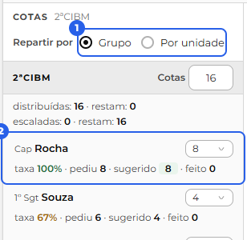
A grade do mês. Ao lado, a grade mostra dias por unidade, e cada dia traz duas barras de cobertura: antes (sem os extras) e depois (já com os extras que você está montando). Dá para ver em Agenda ou Calendário, e há uma busca por nome. Ao clicar num voluntário no painel de Cotas, a grade se pinta pela preferência dele (verde nos dias que quer, vermelho nos que não quer).
Colocar um extra. Em cada dia, o + abre os voluntários daquele dia em três grupos: Interessados (quem quer), Outros e Não querem. Ao escolher um, ele vira uma vaga na célula, com quatro bolinhas (os quatro blocos de 6 horas): você clica para dar de 6 a 24 horas, e o sistema trava na cota do militar. Quem é "fecha 24 h" entra já com o turno inteiro, travado. O X tira o militar.
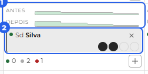
Inserir na escala. Enquanto você monta, os extras ficam como rascunho e a barra "depois" é só uma prévia. O botão "Inserir na escala" aplica tudo de uma vez, e a escala automática recalcula os dias afetados. Remover um extra que já está na escala e que deixaria um furo pede uma confirmação antes.
O dia por dentro. Clicar numa célula abre a gaveta do dia. Em Ver, ficam os avisos daquele dia, o que o extra resolveu e o que ficou faltando, e a distribuição já com os extras. Em Editar, o mesmo editor da Escala, para acertar o dia na mão.
Postos de serviço
Ver os postos (instalações e viaturas)
Os postos de serviço são os lugares onde os militares entram na escala, de dois tipos: instalações e viaturas. Qualquer pessoa pode ver os postos da unidade: abra Postos, escolha uma companhia ou um pelotão no seletor de unidades e use as abas Instalações e Viaturas.
Instalações são os lugares fixos da unidade. São de três tipos, e cada um dá origem a uma função na escala: a Central de Operações (o Rádio Operador), o Rancho (o Rancheiro) e o Almoxarifado (o Almoxarife). A unidade pode ter mais de uma instalação do mesmo tipo; a partir da segunda, o sistema as numera (Central de Operações 2, 3, e assim por diante).
Viaturas são os veículos. Cada uma tem um prefixo próprio (por exemplo, ABT-01) e é única no sistema inteiro: o mesmo prefixo pertence a uma unidade só. Toda viatura tem um Condutor (quem dirige), além da guarnição, e por isso ela guarda a CNH exigida para conduzi-la: basta que o Condutor tenha uma habilitação que cubra essa categoria; o restante da guarnição segue livre disso. A viatura ainda pode ser transferida de unidade e passar por manutenção.
O efetivo do posto. Todo posto tem três números, de 1 a 10, que descrevem o seu efetivo:
- Efetivo mínimo: quantas pessoas o posto precisa, no mínimo, para funcionar.
- Efetivo ideal: a quantidade com que o posto trabalha bem.
- Efetivo máximo: a capacidade máxima, quantas pessoas o posto comporta.
O que o card mostra. Cada card traz o estado e o efetivo. A instalação mostra também o período; a viatura mostra o prefixo e a CNH exigida.
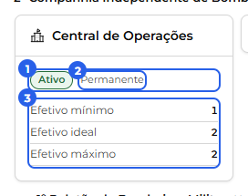
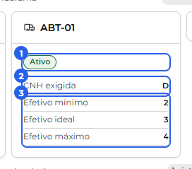
Estado e período. O estado diz se o posto está em uso. Ativo coloca o posto na escala, e a distribuição o preenche. Inativo guarda o posto fora da escala, para você ligá-lo de novo quando quiser. A viatura tem ainda o estado Reserva, que a mantém guardada como reserva, também fora da distribuição. O período mostra a vigência do posto: Permanente, desde uma data, um intervalo de datas ou até uma data.
Cadastrar e configurar postos Apenas administradores
Ao lado dos cards, o botão + inclui um posto, e o clique num card abre o painel de edição, à direita.
Instalação. Ao incluir, você escolhe o tipo (Central de Operações, Rancho ou Almoxarifado), e o sistema dá o nome, numerando quando a unidade já tem uma daquele tipo. No painel ficam o estado (Ativo ou Inativo) e o efetivo mínimo, ideal e máximo (de 1 a 10, sempre em ordem crescente do mínimo ao máximo). O rodapé traz o botão vermelho Excluir instalação, uma ação crítica com confirmação: a instalação sai das telas e da distribuição, e o histórico permanece.
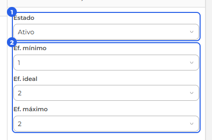
Viatura. Ao incluir, você digita o prefixo (letras e número, como ABT-01) e informa a CNH exigida para conduzi-la. O painel da viatura tem duas abas, Dados e Manutenções. Em Dados ficam o estado (Ativo, Reserva ou Inativo), a CNH exigida e a guarnição, além das seções Transferir (levar a viatura para outra unidade) e Excluir viatura. Como a viatura é única no sistema, ao digitar um prefixo que já pertence a outra unidade o sistema oferece transferi-la, aplicando os dados que você preencheu.
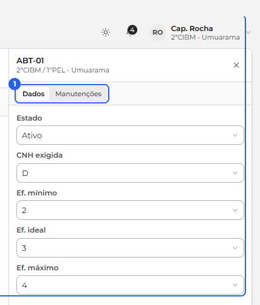
Ponto crítico. Viaturas e instalações são a base da distribuição da escala. Ao incluir, alterar, desativar ou excluir um posto, vale conferir os modelos na Distribuição, que é onde a escala automática decide quem senta em cada posto.
Manutenção de viaturas Apenas administradores
A manutenção fica na aba Manutenções do painel da viatura, registrada como uma janela de datas (um período, como as férias de um militar). Você agenda com início, fim (opcional) e uma observação. Com o fim incerto, use Deixar em aberto e, na volta da viatura, Encerrar agora. Cada janela também pode ser removida.
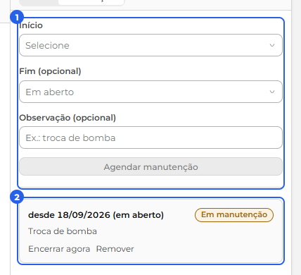
A manutenção é um aviso, e mantém a viatura na escala. Enquanto a janela cobre o dia, a viatura fica marcada como "Em manutenção" e a guarnição permanece nela, como um sinal para você. Para retirar a viatura da distribuição, coloque o estado dela em Reserva ou Inativo.
Distribuição
Ver os modelos
A Distribuição é onde fica o desenho da escala automática: quais funções cada posto tem e quem o sistema prefere colocar em cada uma. Qualquer pessoa pode abrir Distribuição, escolher uma companhia ou um pelotão no seletor de unidades e olhar como está montada. A página tem duas abas, Modelos e Regras.
O que é um modelo. Um modelo é um plano pronto para um dia de serviço, e vale para o grupo inteiro de uma vez: a companhia (uma CIA ou uma CIBM) junto com os seus pelotões. Ele lista, em cada unidade do grupo, os postos que entram e, dentro de cada posto, as funções a preencher (Condutor, Rádio Operador, Efetivo, e assim por diante). As colunas que você vê na lista são as unidades do grupo.
O que os números significam. Um modelo é definido por um conjunto de números: quantos oficiais e praças em cada unidade do grupo. Na lista à esquerda, cada unidade aparece com um par de números, como 1·6, em que o primeiro conta os oficiais e o segundo conta as praças. Então 1·6 é um dia com um oficial e seis praças. Um modelo pode ser, por exemplo, a companhia com um oficial, o 1º Pelotão com sete praças, o 2º Pelotão com quatro praças e o 3º Pelotão com três praças. Esse conjunto de números é a identidade do modelo: a cada dia, a escala automática usa o modelo cujos números batem com quem está de serviço. Na linha, um sinal de completo diz que o modelo dá conta daquele tamanho de equipe, e um sinal de alerta mostra que falta alguma coisa.
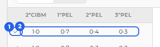
As vagas do modelo. Ao clicar num modelo, à direita aparecem as suas vagas, agrupadas por posto. Cada vaga é uma linha com a função (Condutor, Rádio Operador, Efetivo, e assim por diante), o Tipo (oficial ou praça), a Antiguidade (se o sistema prefere o mais antigo ou o mais moderno para aquela vaga), o Grau (a graduação ideal) e o Rodízio (se a vaga entra no rodízio). O rodapé confirma quando está tudo certo, em verde, ou lista o que falta, em amarelo.
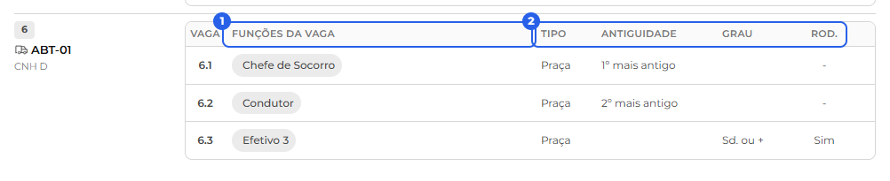
Como o sistema preenche. Escolhido o modelo do dia, o sistema preenche as vagas de cada posto seguindo o que a vaga pede. Algumas escolhas são automáticas e fixas: o Chefe de Socorro e o Oficial de Área são sempre os mais antigos de serviço, e o Condutor de uma viatura precisa de uma CNH que cubra o veículo. Se faltar gente ou surgir um conflito, o sistema sinaliza o problema e mantém a escala na tela. O resultado de cada dia, com quem senta em cada posto, você acompanha na Escala. A lógica completa está no apêndice A lógica por trás.
As regras por militar
A Distribuição tem uma segunda aba, Regras. Uma regra é uma restrição que vale para um militar específico e ajusta a escala automática: ela diz que aquele militar deve, ou não deve, exercer uma certa função. Elas atendem a casos particulares de um ou outro militar. Há dois tipos:
- Proibida: o militar nunca é colocado naquela função.
- Exclusiva: o militar fica dedicado só àquela função. O sistema o coloca nela antes dos outros e o mantém fora das demais. A função continua aberta para os outros militares, que também podem exercê-la.
Qualquer pessoa abre a aba Regras e vê as regras de cada militar. Criar e retirar regras é tarefa do administrador.
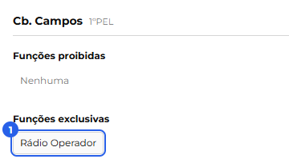
Editar os modelos Apenas administradores
Editar um modelo. No menu de opções de um modelo, Editar abre o modo de edição. Ali você clica nas células de Tipo, Antiguidade e Grau para escolher o valor, marca o Rodízio, usa + Nova função para incluir uma vaga e o botão de remover para tirar, e + Acúmulo para a mesma pessoa cobrir mais de uma função. Desfazer e Refazer ficam no canto do subcabeçalho, e também respondem a Ctrl+Z e Ctrl+Y. Ao Salvar, o sistema avisa que as escalas já montadas serão recalculadas e mostra um resumo do que mudou.
Novo modelo. O botão Novo modelo, no rodapé da lista, cria um do zero: você define quantos oficiais e praças, por unidade, aquele modelo atende. Ele aparece na hora, e fica de vez quando você clica em Salvar; ao cancelar ou sair sem salvar, ele é descartado.
Editar um pelotão vale para todos os modelos com aquela quantidade. A configuração das vagas de cada unidade fica guardada junto com a quantidade de militares dela. Assim, quando dois ou mais modelos têm um pelotão com a mesma quantidade, eles usam a mesma configuração daquele pelotão.
Exemplo. Você tem três modelos e, nos três, o 1º Pelotão aparece com sete praças. Se abrir um deles e mudar as vagas do 1º Pelotão, trocando uma função ou ajustando a antiguidade, a mesma mudança passa a valer nos três, porque todos apontam para a configuração de "1º Pelotão com sete praças". Se um quarto modelo tiver o 1º Pelotão com seis praças, ele tem a sua própria configuração e continua como está.
A exceção é o acúmulo entre unidades: quando uma vaga acumula uma função de outra unidade, aquela combinação passa a valer só naquele modelo, e a edição fica restrita a ele.
Criar e editar regras Apenas administradores
Na aba Regras, escolha um militar à esquerda e use + Adicionar, escolhendo a função, ou o botão de remover, nos grupos Proibidas e Exclusivas. Ao Salvar, o sistema grava e já redistribui os dias futuros. Alguns pontos:
- No grupo Proibidas existe a opção Acumular em outra unidade: o militar fica reservado à sua própria unidade e sai da lista de reforços para outras.
- No grupo Exclusivas, a função Condutor aparece só para quem tem CNH C ou maior.
- O Chefe de Socorro e o Oficial de Área ficam de fora das regras, porque são sempre os mais antigos de serviço.
Usuários (o efetivo)
Ver o efetivo e as fichas
A página Usuários reúne todo o efetivo. Na aba Efetivo, as unidades aparecem em árvore (a companhia e seus pelotões) e, ao abrir uma unidade, os militares dela surgem em cards. O número ao lado do título diz quantos estão à vista.
O card de cada militar. Traz a abreviação do grau, o nome, um identificador e um selo de situação: Ativo em verde, ou Férias, Licença e Dispensa em âmbar, com a data até quando valem.
Ajustar o que aparece. Dois botões no alto mudam a exibição. O Exibir (o olho) escolhe o identificador visível (CPF, RG, telefone ou e-mail), o formato do nome (só o de guerra ou o nome completo com o de guerra em destaque) e liga ou desliga a hierarquia, que é a abreviação do grau. O Ordem organiza a lista por antiguidade (do mais antigo, o padrão, ou do mais moderno) ou em ordem alfabética (de A a Z ou de Z a A). Essas escolhas valem só para você.
Filtrar e procurar. Os filtros de Graus e Situação encolhem a lista ao que interessa, e o funil fica destacado quando algum está ativo. A busca tem dois modos, trocados no botão ao lado: Marcar realça quem combina com o texto sem esconder os demais, e Filtrar deixa à vista só quem combina. Ela procura por nome de guerra, nome completo, CPF ou RG.
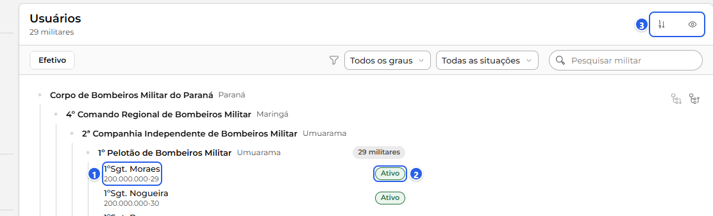
A ficha do militar. Um clique no card abre a ficha no painel à direita, com o grau e o nome de guerra no topo e o nome completo logo abaixo. Ela tem duas abas: Dados, com os dados pessoais (nome completo, CPF, RG, idade, nascimento, CNH, celular e e-mail), e Carreira, com os dados institucionais (posto, setor, inclusão, colocação, antiguidade, lotação e situação) e o histórico de Promoções e Transferências, que abrem ao clicar. Qualquer pessoa consulta a ficha; editar é tarefa do administrador.
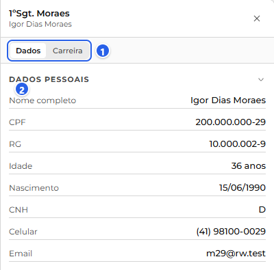
Quando o militar foi cadastrado sem conta de login, a ficha avisa no topo, com "Sem acesso ao sistema". Ele existe para a escala funcionar, mas não entra em trocas, folgas nem extrajornada enquanto não criar a própria conta.
Cadastrar o efetivo e liberar acesso Apenas administradores
Para incluir um militar, abra Usuários e clique em Novo usuário, no topo da lista. O cadastro abre no painel à direita.
Você preenche os dados pessoais (nome, CPF, RG, nascimento, CNH e celular) e os dados institucionais (tipo, posto ou graduação, nome de guerra, data de inclusão, colocação, setor e lotação). Ao escolher o posto, o sistema pede também as datas de promoção de cada graduação. O email é opcional: a ficha pode existir só para a escala funcionar, e o militar informa o próprio email quando for criar o acesso.
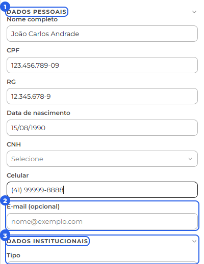
Ao Salvar, o militar passa a existir no sistema e já aparece na árvore de unidades; se for operacional, pode entrar na escala. O sistema mostra um resumo do que foi cadastrado.
Cadastrar não cria senha. O Novo usuário registra a pessoa, não o acesso. Não existe senha padrão, e o administrador nunca define a senha de ninguém: quem cria a senha é o próprio militar, ao assumir a conta.
Liberar o acesso (gerar o token). O militar assume a própria conta com um token de acesso que você gera na ficha dele. Enquanto ele não tem acesso, abra a ficha (clique no card, em Usuários) e, no painel à direita, a seção Acesso ao sistema mostra a situação e o botão Gerar token de acesso.
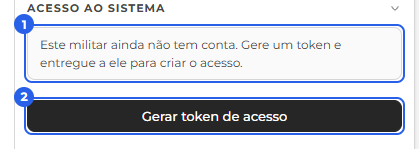
Ao gerar, o código aparece uma vez num aviso. Anote e entregue ao militar por fora, em mãos ou por mensagem; ele usa esse código na tela "Criar conta" para conferir os dados e definir a senha. Depois de gerado, o botão passa a mostrar a situação do token e vira Gerar novo token, para o caso de o militar perder o código ou não concluir a tempo.
O sistema guarda apenas uma versão protegida do token, nunca o código em si, então ele não pode ser consultado depois. Se o militar precisar, gere um novo: o anterior deixa de valer.
Promover, transferir e dar baixa Apenas administradores
As mudanças de carreira ficam na ficha, quando você troca de Ver para Editar (o alternador no alto do painel) e abre a aba Carreira. Ali, três blocos abrem ao clicar: Promover, Transferir e Dar baixa do sistema. Cada ação registra no histórico e mostra um resumo ao final.
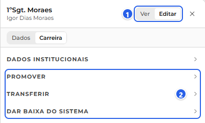
Promover. Escolha o Tipo da carreira e o sistema calcula sozinho o posto de destino, em "Promovido a": no mesmo tipo, a graduação seguinte; mudando de tipo, a graduação de entrada do novo tipo. O sistema não pula graus, e uma mudança que seria rebaixamento não é aceita. A data precisa ser posterior à última promoção e não pode cair no futuro. Ao confirmar, o banco atualiza o grau e a antiguidade e recalcula a escala.
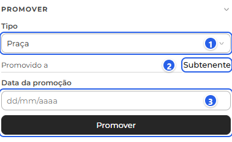
Transferir. O bloco mostra a lotação atual em De, você escolhe a unidade em Para (na árvore de unidades) e a data A partir de (começa hoje, sem futuro). Antes de confirmar, o sistema avisa quais trocas e folgas da unidade de origem a saída vai cancelar. Confirmando, o militar passa para a nova unidade e a escala é recalculada.
Dar baixa. No fim da aba, o bloco Dar baixa do sistema traz a data A partir de e o botão Excluir do sistema. A confirmação mostra o nome e o CPF e avisa das trocas e folgas que serão canceladas. O militar passa a Inativo e sai do efetivo ativo, reaparecendo só com o filtro Inativos. Para um militar já inativo, no lugar dessas ações aparece Readmitir ao efetivo, com uma data, que o traz de volta.
Ajustar os dados da ficha. No mesmo modo Editar, a aba Dados deixa mudar os dados pessoais e a aba Carreira, os institucionais (nome de guerra, setor, inclusão e colocação). O CPF não muda, e o grau e a lotação também não se editam aqui, porque mudam por promoção e transferência. Ao Salvar, o sistema grava e mostra o resumo. Se você alterar a CNH, ele pede uma data para recalcular a distribuição, já que a CNH decide quem pode ser condutor.
Redefinir senha. Para um militar que já tem conta, a aba Dados no Editar traz o botão Redefinir senha, que cria uma senha temporária mostrada uma vez, para você repassar a ele. É diferente do token, que serve ao primeiro acesso de quem ainda não criou a conta.
Aprovar cadastros e correções Apenas administradores
Em Usuários, a aba Aprovações reúne o que espera a sua decisão sobre pessoas. O número na aba conta os pendentes, e a tela traz duas filas: Cadastros e Correções.
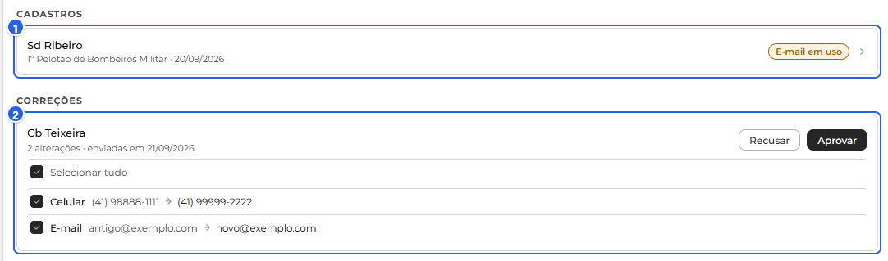
Cadastros (liberar um novo acesso). Aqui ficam os militares que se cadastraram sozinhos pela tela "Criar conta". Cada card mostra o militar, a lotação e a data do pedido; um selo de alerta avisa quando há algo a conferir, como um CPF que já tem conta, um cadastro que já existe ou um e-mail em uso. Clicando no card, o pedido abre no painel: em Ver, do jeito que o militar enviou; em Editar, o mesmo formulário do Novo usuário já preenchido, para você corrigir o que precisar. Os botões são Aprovar e Recusar, e a conta de acesso só nasce quando você aprova.
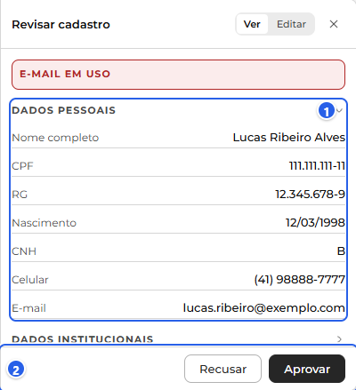
Correções (mudanças de dados). São os pedidos que os militares mandam pelo Meu perfil. Cada card é um militar com as alterações que ele enviou juntas, e cada linha mostra o campo, o valor atual e o novo, com uma caixa de seleção, mais o "Selecionar tudo" no topo. Aprovar e Recusar valem só para o que está marcado, então você pode aceitar umas alterações e recusar outras no mesmo pedido. Esta fila mostra os pedidos das unidades selecionadas na barra lateral.
No Efetivo, o card de quem tem uma correção esperando ganha o selo "Correção pendente", visível só para o administrador.
Afastamentos Apenas administradores
Você precisa ser administrador para esta parte.
A página Afastamentos reúne quem está fora por férias, licença ou dispensa, cada uma em sua aba. A aba mostra a árvore de unidades com os afastados e a contagem por unidade. Cada item traz o militar, o tipo e o período, os dias, e, nas licenças e dispensas, um selo "Fora do fluxo" ou "Segue no fluxo".
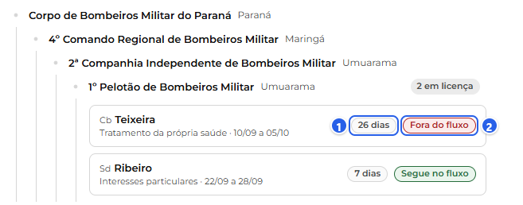
Registrar um afastamento. O botão no topo (Novas férias, Nova licença ou Nova dispensa, conforme a aba) abre o painel. Em todos você escolhe a unidade, o militar e o período. As férias param por aí. A licença pede ainda o tipo (própria saúde, saúde de familiar, interesses particulares, especial ou capacitação) e, quando é da própria saúde, o CID e o médico. A dispensa pede o tipo (gala, nojo ou comum). Licença e dispensa aceitam também um motivo.
Dentro ou fora do fluxo da escala. Ao preencher o período de uma licença ou dispensa, aparece um indicador com os dias e uma sugestão: até 15 dias, "Segue no fluxo"; de 16 em diante, "Fora do fluxo". Quem decide é você, no botão "Tirar do fluxo da escala?", com Sim ou Não. Fora do fluxo, o militar sai da escala por tempo indeterminado, e o administrador o traz de volta quando for o caso; seguindo no fluxo, ele continua na escala normalmente. As férias afastam o militar da escala no período.
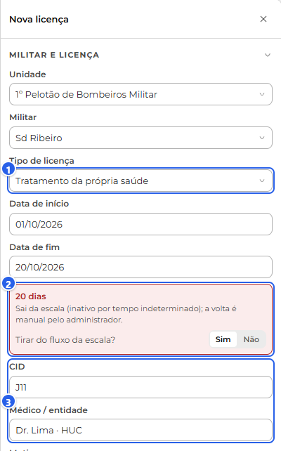
Ao salvar. O sistema recalcula a escala. Se o militar tiver um serviço assumido por troca dentro do período, ele avisa e pede confirmação antes de prosseguir. Depois grava, registra no histórico e abre o resumo. O afastamento passa a aparecer como selo de situação, como "Licença até 30/09", no Efetivo e na escala.
Ajustes de ritmo das unidades Apenas administradores
Você precisa ser administrador para esta parte.
A página Ajustes guarda as configurações das unidades. À esquerda fica o índice das seções (por ora uma, Escala › Ritmo das unidades) e, no corpo, a árvore de unidades com um card de ritmo em cada uma.
O ritmo é a cadência de serviço e folga da escala automática da unidade. O card mostra o valor e a explicação por extenso, e as opções são três: 24/48 (24 h de serviço e 48 de folga), 24/72 e 12/36.
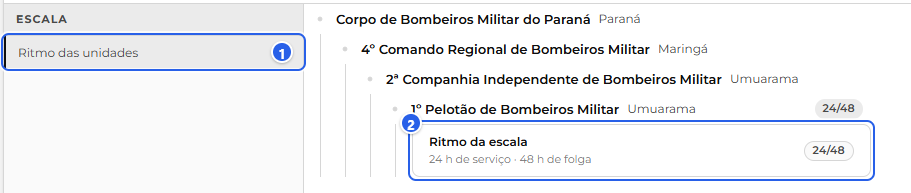
Mudar o ritmo. Clique no card e o painel à direita abre em edição: escolha o novo ritmo no seletor e veja a nota do Efeito, que avisa que a escala automática da unidade será regerada. O Salvar só habilita quando você troca o valor. O usuário comum vê o card, mas não edita.
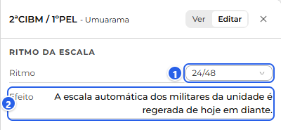
Ao salvar. Como o ritmo muda o "quando" do serviço de todos, o sistema pede a data a partir da qual ele vale (começa amanhã), regenera a escala automática dos militares da unidade dessa data em diante, recalcula a distribuição, registra no histórico e abre o resumo.
Avisos
Os meus avisos
O sistema te mantém informado pelo sino, no alto da tela, à direita. O número sobre o sino conta os avisos em aberto (não é a quantidade de não lidos). Clicando nele, abre uma lista com os seus avisos.

Ler e resolver. Um aviso que só informa (por exemplo, "Troca aprovada") sai da lista quando você o lê. Um aviso que pede uma ação sua (como uma troca esperando a sua confirmação) fica na lista até o assunto ser resolvido, mesmo que você já o tenha visto. Clicar num aviso leva direto para a tela do assunto. Há também o "Marcar todas como lidas", que limpa de uma vez os avisos que só informam, e o "Ver todos", que abre a página Avisos.
O que chega para você. Os avisos acompanham o que acontece com as suas trocas, folgas e dados:
- Trocas: "Troca de serviço para confirmar" (quando um colega pede que você cubra o serviço dele), "Troca aprovada", "Troca recusada", "Troca negada pela administração" e "Troca cancelada".
- Folgas: "Folga aprovada", "Folga recusada", "Folga cancelada", "Folga concedida" (quando o gestor concede uma folga direto para você) e "Saldo de folgas ajustado".
- Dados: quando o gestor decide uma correção de dados que você pediu.
A página Avisos. O "Ver todos" abre a página Avisos, com duas abas. Em Para mim, no topo aparece o "Precisa de você" (o que espera uma ação sua, como uma troca a confirmar) e, abaixo, o histórico de tudo que já aconteceu com você. Em Comunicados ficam os avisos gerais que a administração publica para toda a unidade, e que você lê.

Criar comunicados e resolver pendências Apenas administradores
A aba Administração. Além de Para mim e Comunicados, o administrador tem a aba Administração, com um número no selo. Ela lista as pendências que esperam a sua decisão. Uma pendência não é um aviso que você lê: é um estado que some sozinho quando alguém resolve o assunto. Cada uma mostra uma contagem e um texto, e clicar leva direto à tela onde se resolve, como as trocas ou as folgas a aprovar.
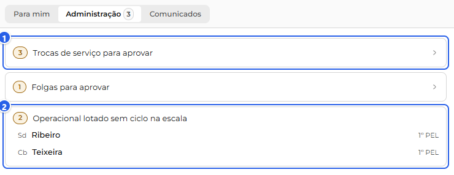
Duas pendências não levam a outra tela, e sim listam os itens ali mesmo, para você consertar como quiser: Operacional fora da escala mostra os militares lotados sem ciclo, para acertar pelo Contínuos, e Viaturas em manutenção mostra as viaturas paradas, para resolver na Escala ou na Distribuição. É a mesma lista que abastece o "Precisa de você" da aba Para mim, com o que é seu.
Criar um comunicado. Na aba Comunicados, o botão Novo comunicado abre o painel. No topo você escolhe o destinatário: Unidades (na árvore, e uma unidade alcança as de baixo), Militares (da lista, com busca) ou Todos. Abaixo vêm o título e a mensagem. Ao Salvar, o comunicado é publicado e passa a aparecer no mural para quem ele alcança.
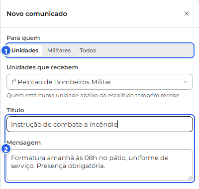
Para tirar um comunicado do ar, use a lixeira no card dele, na aba Comunicados; o sistema pede confirmação antes de remover.
Histórico Apenas administradores
Você precisa ser administrador para esta parte.
O Histórico é o registro de auditoria do sistema: cada ação que grava algo (cadastrar, promover, afastar, mudar o ritmo, aprovar uma troca ou folga, publicar um comunicado) deixa um evento aqui. A página usa a mesma árvore de unidades, com os eventos agrupados por unidade e a contagem "N registros" em cada uma.
Cada evento é um cartão que abre. Recolhido, ele mostra a parte do sistema a que pertence (Usuários, Escala, Afastamentos e assim por diante), o assunto e a linha com quem fez, o que fez e quando. Clicando, o cartão revela os detalhes das mudanças, no mesmo formato do resumo que aparece ao salvar.
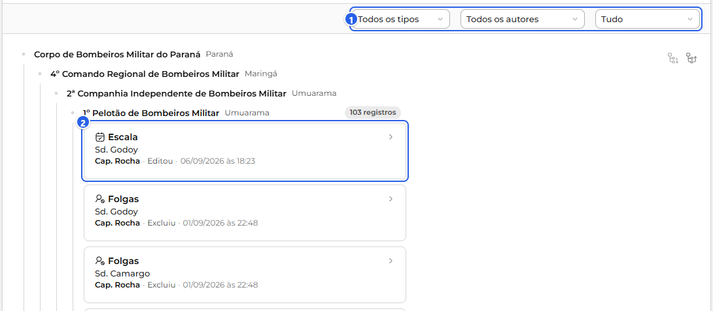
Filtrar. No topo, o Período (Hoje, Últimos 7 dias, Últimos 30 dias ou Tudo, começando nos 30 dias) refaz a busca ao mudar; o Tipo restringe pela parte do sistema e o Autor, por quem fez a alteração. Um "x" em cada um volta para "Todos".
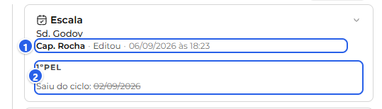
Cores e selos
As cores e os selos seguem sempre a mesma ideia no sistema todo, para você consultar quando bater a dúvida:
- Aprovada Verde. Tudo certo: aprovado, ativo, sem problema.
- Pendente Amarelo. Atenção: algo pendente ou uma ressalva a conferir.
- Recusada Vermelho. Problema: um erro, um conflito ou algo recusado.
- Cancelada Cinza. Encerrado sem efeito, como algo cancelado.
Os selos são essas etiquetas coloridas que resumem a situação de um item. Os mais comuns são Ativo, Pendente, Aprovada, Recusada (ou Rejeitada) e Cancelada.
Onde buscar ajuda
Se ficar com uma dúvida ou algo não sair como esperado, você tem três caminhos.
- O administrador da sua unidade. É quem cuida do que você não altera sozinho: os seus dados, a escala, as folgas, as trocas, o acesso e as aprovações. Para as questões do dia a dia do serviço, fale com ele.
- Fale conosco. No menu do seu nome, no canto do cabeçalho, "Fale conosco" abre uma janela para enviar um recado à equipe do sistema. Você escolhe o tipo (Sugestão, Problema ou Outro), escreve um assunto e a mensagem. Serve para relatar uma falha do sistema ou sugerir uma melhoria; a tela em que você está vai junto, para ajudar a equipe a entender.
- O Manual. Este documento fica sempre à mão no menu do seu nome, em "Manual", para consultar como cada parte funciona.
Em resumo: dúvidas sobre o seu serviço e os seus dados são com o administrador; problemas e ideias sobre o sistema vão pelo Fale conosco.
Apêndice: a lógica por trás
Esta parte explica, por dentro, as regras que o sistema segue para montar a escala sozinho. Você não precisa mexer em nada disso, mas entender ajuda a ler o resultado.
Antiguidade em primeiro lugar. Em quase toda escolha, o mais antigo tem prioridade, e a antiguidade é o desempate em tudo. Cada vaga do modelo pede praça ou oficial, e o sistema só encaixa quem é do tipo certo.
Chefe de Socorro e Oficial de Área são sempre os mais antigos. O Chefe de Socorro é o praça mais antigo do pelotão; o Oficial de Área, o oficial mais antigo. Isso é absoluto: nenhuma regra (proibida ou exclusiva) tira o mais antigo desses papéis.
Condutor só com CNH. A função Condutor de uma viatura só cai em quem tem CNH compatível com a categoria que a viatura exige (por exemplo, uma viatura que pede C aceita quem tem C, D ou E). Quem não tem a carteira nunca é posto como condutor.
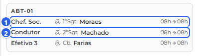
Acúmulos: a mesma pessoa em duas funções. Quando é preciso, a mesma pessoa cobre mais de uma função. O caso clássico: se a viatura ficaria sem condutor mas o Chefe de Socorro (ou outro tripulante) tem carteira, ele acumula o Condutor, ficando nas duas funções. A tela mostra numa linha só, com os dois rótulos e um nome. Como o chefe já conta como efetivo, a cadeira que ele liberou vira mais um Efetivo para o próximo da fila. Existe também o acúmulo entre unidades e o reforço (um militar sai da própria unidade para completar outra).
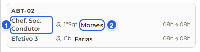
Ajustes finos: grau ideal e rodízio. Cada função pode ter um grau ideal (a graduação mais indicada, exata ou "daquela para cima ou para baixo"); faltando o ideal, o sistema aproxima e avisa. E o rodízio faz o sistema variar quem pega certas funções, para não cair sempre no mesmo.